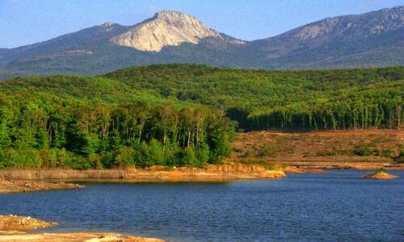

Hakkımda
Kaz Dağları
.jpg)
Eski çağlarda “İda” adıyla bilinen ve birçok efsaneye konu olan Kaz Dağları, Balıkesir - Çanakkale
arasında, Kuzey Ege kıyıları boyunca uzanan eşsiz bir doğa harikasıdır. Milli park statüsüyle koruma
altında bulunan, benzersiz doğası ve tertemiz havasıyla Kaz Dağları doğa yürüyüşleri, bisiklet turları ve
kamp gibi birçok turizm etkinliğine elverişlidir. Şahinderesi Kanyonu, Sütüven Şelalesi, Zeus Altarı,
Hasanboğuldu gibi birçok tarihi ve kültürel mirasa sahip Kaz Dağları’nda, Balıkesir Büyükşehir
Belediyesi tarafından doğal dokuya zarar vermeden inşa edilen cam seyir terası ile muhteşem
manzarayı izleyebilir, aynı zamanda ile de büyüleyici bu yerin tüm güzelliklerini yaşayabilirsiniz.
----------------------------------------------------------------------------------------------------------------------------------------------------------------------------------------------------------------------------------------------
----------------------------------------------------------------------------------------------------------------------------------------------------------------------------------------------------------------------------------------------
Çataldağ

Doğa ve macera turizminin önemli noktalarından biri olan Çataldağ, Balıkesir-Bursa sınırında, Susurluk
ilçe merkezine 30 kilometre mesafede yer alır. Eşsiz manzaranın keyfine varmak için seyir terası da
bulunan Çataldağ, piknik ve kamp severler dışında doğa yürüyüşleri, bisiklet, yamaç paraşütü,
yüksekten atlama gibi spor dalları için de ideal. Yolunuz Çataldağ’a düşerse çok yakında bulunan
Çaylak Şelalesi’ni de ziyaret listenize eklemeyi unutmayın.
----------------------------------------------------------------------------------------------------------------------------------------------------------------------------------------------------------------------------------------------